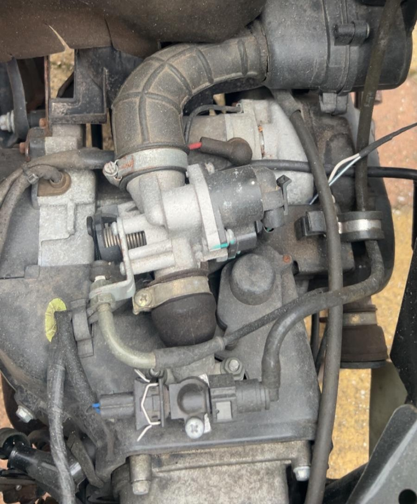

Bougie vervangen

De bougie zorgt voor de vonk waarmee het brandstof-luchtmengsel in de cilinder wordt ontstoken. Na verloop van tijd kan de bougie slijten of vervuild raken. Verwijder eerst de bougiedop en draai de oude bougie met een geschikte bougiesleutel los. Plaats vervolgens een nieuwe bougie met de juiste specificaties. Draai deze voorzichtig vast om beschadiging van de schroefdraad te voorkomen.
De bougie zorgt voor de ontsteking van het brandstof-luchtmengsel. Verwijder de bougiedop en draai de oude bougie los. Plaats een nieuwe bougie met de juiste specificaties en draai deze voorzichtig vast.